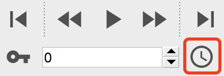

Animation settings

The Animation Settings dialog can be opened from the animation toolbar:
{kind=link}
The dialog lets you manage animation-related settings, e.g. the playback frame rate and the length of the current animation. Note that a more detailed introduction to OVITO’s animation system can be found here.
Settings
- Frames per second
The playback speed of the animation in frames per second. This value determines both the frame rate of movie files rendered by OVITO and the playback of the animation in the interactive viewports.
- Playback speed
Controls the playback speed of the animation in OVITO’s interactive viewports. This factor is multiplied by the frame rate (FPS) described parameter above. Note that the effective playback speed may be much slower if loading, computing, and displaying the next frame takes a long time.
- Every Nth frame
Lets OVITO skip some animation frames during playback in the interactive viewports. Use this to accelerate the playback of a long trajectory, where loading and computing every frame would take too much time.
- Loop playback
Controls whether animation playback in the viewport happens in a repeating loop. If turned off, playback stops when the end of the animation is reached.
- Custom animation interval
This option lets you override the length of the animation interval shown in the timeline of OVITO. Normally, this interval is automatically adjusted to the length of the loaded simulation sequence(s). Setting a custom animation length is useful, for example, if the simulation dataset consists of just a static frame (not a trajectory) but you would like to create a camera animation moving around the dataset.